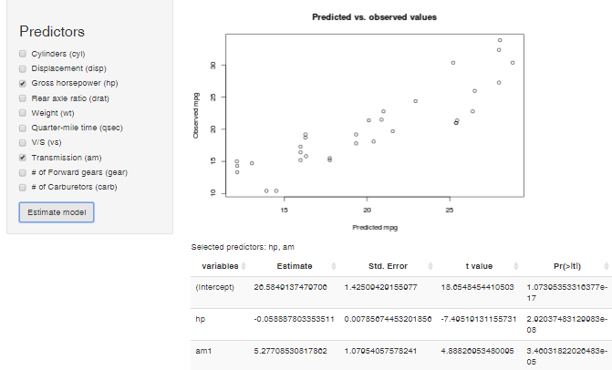
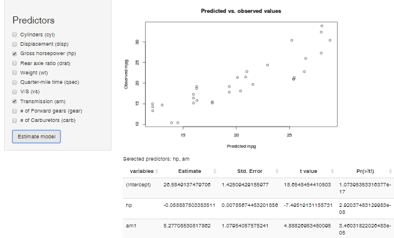

This Shiny app (https://injemaster83.shinyapps.io/Assignment) helps to estimate the best linear model which predicts the miles per gallon in the Motor Trend Car Road Tests (mtcars dataset).

Miguel Duarte
This Shiny app (https://injemaster83.shinyapps.io/Assignment) helps to estimate the best linear model which predicts the miles per gallon in the Motor Trend Car Road Tests (mtcars dataset).

In the left panel, there are 10 predictors you can choose to fit the model (Cylinders, Displacement, Gross horsepower, Rear axle ratio, Weight, Quarter-mile time, V/S and Transmission).
After you choose, press the "Estimate model" button at the bottom of the left panel. You will see the following results:
Example: Plot with predicted vs. observed values
data(mtcars)
fit <- lm(mpg ~ am + hp, mtcars)
plot(x=predict(fit,mtcars),y=mtcars$mpg,xlab="Predicted mpg",ylab="Observed mpg")

In the app, this piece of code is generated interactively by just selecting "am" and "hp" in the left panel.
This simple but powerful app allows you to interactively select the best linear model for the mtcars dataset with just few clicks!
You have all the relevant information in just one view, and any changes you make are updated instantly just pressing the "Estimate model" button.